Come si usa l'app
Nell'app trovi gli allenamenti di ogni giorno con le isole nell'ordine del tuo gruppo, le foto degli esercizi, le schede PDF, il tuo programma personale e i tuoi test. A ogni seduta segni la presenza.
Apri l'app →Per gli atleti
Aggiungila alla schermata Home
Apri il link dell'app dal telefono:
rcafadriatico.github.io/Allenamenti-Montefeltro-APP
- iPhone (Safari): tasto Condividi ⬆️ → «Aggiungi alla schermata Home»
- Android (Chrome): menu ⋮ → «Aggiungi a schermata Home»
Così la trovi tra le app, con il logo della Montefeltro.
Username e PIN
Nella scheda Chi sei scrivi il tuo username e, se l'allenatore te l'ha dato, il PIN. Poi premi Entra. Lo fai una volta sola: il telefono si ricorda di te.
Username e PIN te li dà l'allenatore. Non darli a nessuno: servono a segnare la presenza e a vedere il tuo programma e i tuoi test.

Scegli il giorno e il tuo gruppo
In alto tocca il giorno (di solito è già quello di oggi) e il tuo gruppo, da G1 a G4. Il telefono si ricorda il gruppo.
Se fai 4 sedute a settimana, martedì e giovedì per te sono in grigio: niente seduta.

Premi «Sono presente»
Quando arrivi in palestra premi Sono presente, una volta per seduta. Compare l'ora in cui l'hai segnata.

Pianta e isole nell'ordine del tuo gruppo
La pianta mostra dove sono le isole in palestra. Sotto trovi le isole nell'ordine in cui le fa il tuo gruppo:
- Blu · Remoergometro: il lavoro da fare, per esempio «1' di partenza + 9' a 22 colpi»
- Rosso · Esercizi: gli esercizi del circuito, con la foto
Se c'è, il riquadro nero Tabata ti dice cosa impostare nell'app Tabata: è uguale per tutti.


Tocca un esercizio per vedere come si fa
Tocca il nome o la foto di un esercizio: si apre la scheda con la foto grande e, quando ci sono, la spiegazione e i pesi indicativi (M = maschi, W = femmine).

Allenamento in aggiunta
Alcuni giorni, dopo le isole, c'è un riquadro In aggiunta con un altro lavoro, per esempio il mercoledì «Pesi + remoergometro».

Programma personale
Se l'allenatore ti prepara degli allenamenti solo per te, li trovi nel riquadro blu Il tuo programma personale, sotto la presenza. Li vedi solo tu.

I miei test
Apri I miei test per inserire i tuoi test: 500, 1000, 1500 e 2000 m al remoergometro e 4000 m bike.
- Scegli il test e la data
- Scrivi il tempo come minuti:secondi, per esempio 7:05,3
- Premi Salva test
In alto vedi il tuo miglior tempo per ogni test, con il passo /500. Sotto c'è la cronologia: ogni test con la differenza rispetto al precedente (verde se sei migliorato).

Altri allenamenti, schede PDF e libreria
- Altri allenamenti: la libreria dei lavori al remoergometro e altri allenamenti di bike, pesi e circuito
- Schede PDF: tocca una scheda per aprirla, con «Scarica PDF» la salvi sul telefono
- Libreria esercizi: tutti gli esercizi con le foto, divisi per categoria e con la ricerca


Per l'allenatore
«Sono l'allenatore»
In fondo all'app tocca Sono l'allenatore e scrivi la password. Compaiono l'area allenatore, l'elenco atleti, i test e il registro presenze. Per uscire: «Esci dall'area allenatore».
La password si cambia nel codice dello script del foglio Google (riga 8), poi si rifà il deployment come nuova versione.
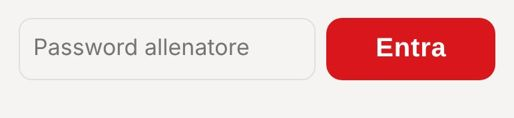
Tabata e remoergometro
Scegli il giorno in alto e apri Area allenatore · esercizi.
- Impostazione Tabata: una per tutti, per esempio «5 × 45"/15"»
- Remoergometro: scrivi il tipo di lavoro, una riga per indicazione. Con Prendi dalla libreria remo inserisci un lavoro già salvato, con Salva questo lavoro nella libreria remo lo salvi per la prossima volta.
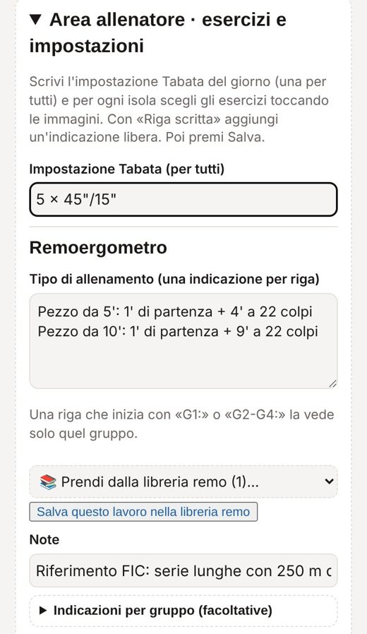
Repository dei formati
Lunedì, mercoledì e venerdì, in cima all'Area allenatore, c'è Formato dell'allenamento di questo giorno. Scegli dal repository al posto della struttura fissa. Ogni formato ha un'etichetta: [Remo], [Circuito] o [Pesi], secondo la parte prevalente.
- Remo: fondo lungo a piramide, turni da 8', velocità, colpi crescenti, staffette a squadre, tutti al remo a coppie
- Circuito: 4 isole con sovraccarico
- Pesi: Scheda 1 e Scheda 2
Con Differenzia per gruppo dai un formato diverso a G1, G2, G3 o G4 (gli altri restano «come tutti»). Il formato cambia sequenza, minuti e testo del remo o dei pesi; gli esercizi dei circuiti restano. Per tornare al programma scegli «Standard di oggi».
Esercizi scelti dalle immagini
In ogni isola circuito tocca Scegli dalle immagini: tocchi le foto degli esercizi (quelli scelti diventano rossi), poi Fatto. Con ↑ cambi l'ordine, con ✕ togli.
- Riga scritta: per un'indicazione libera
- Note e Indicazioni per gruppo: testo che vedono tutti, oppure solo G1, G2, G3 o G4
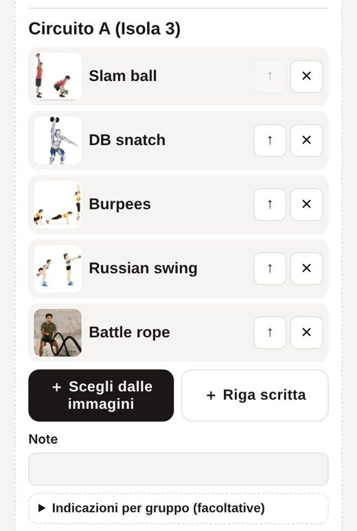
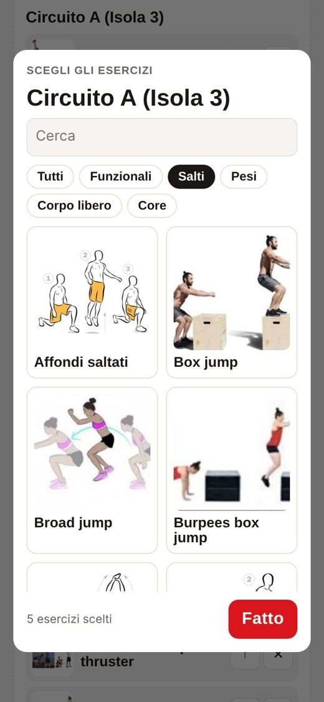
Allenamento in aggiunta, poi «Salva»
In fondo c'è Allenamento in aggiunta, facoltativo: titolo, descrizione ed esercizi. Lasciato vuoto non compare.
Alla fine premi Salva: i ragazzi vedono subito il nuovo allenamento. Salvando, l'allenamento precedente di quel giorno viene sostituito.
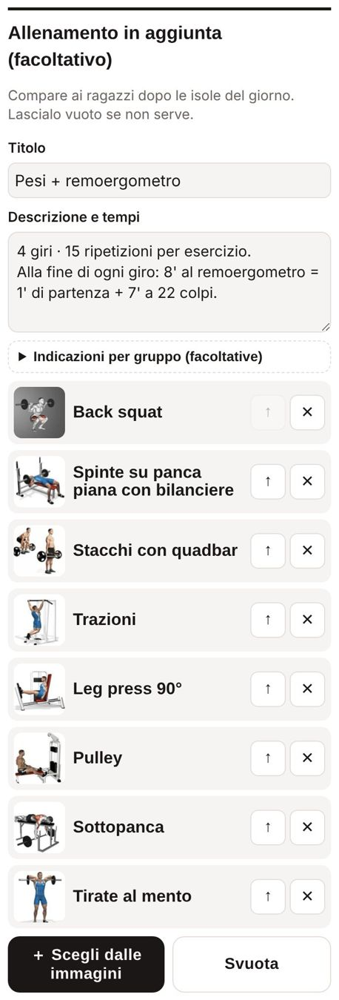
Atleti e username
Per ogni atleta: nome, username, anno, PIN (facoltativo) e sedute (6 o 4). Con 4 sedute martedì e giovedì per lui sono in grigio. Aggiungi atleta per uno nuovo, poi Salva elenco.
L'elenco con username e PIN si scarica dal foglio Google, scheda «Atleti»: File → Scarica.
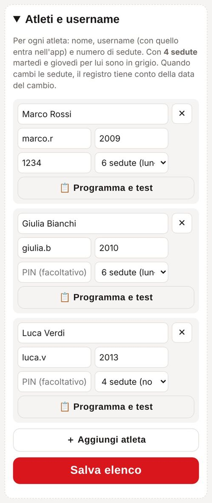
📋 Programma e test
Accanto a ogni atleta tocca 📋 Programma e test. Si apre la sua scheda:
- Nuovo allenamento personale: scegli il tipo (Remoergometro, Pesi o Circuito), scrivi titolo e descrizione e, per pesi e circuito, scegli gli esercizi dalle immagini. Lo vede solo lui.
- Test: i suoi risultati e la cronologia. Puoi aggiungere un test per lui o cancellarne uno sbagliato.
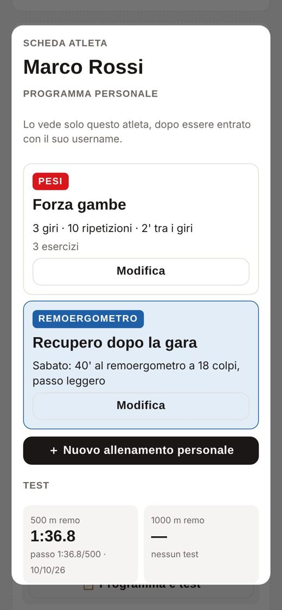
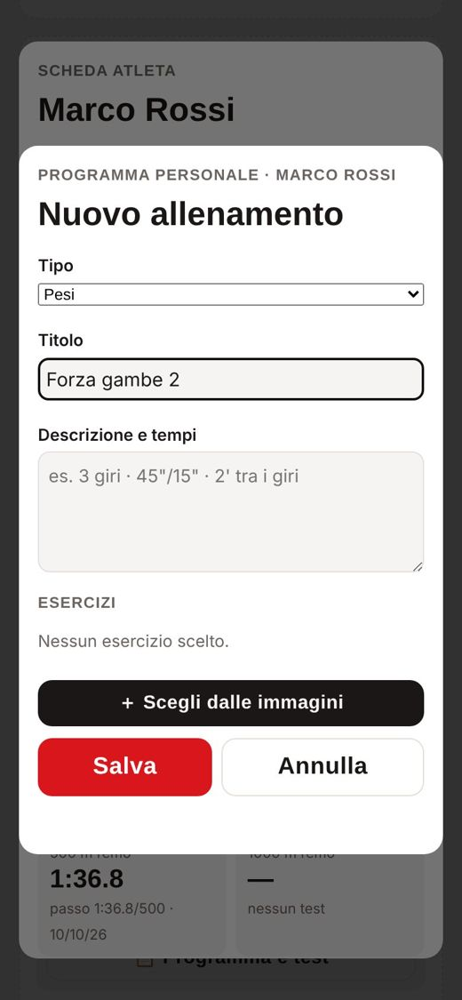
Tabella dei test
In Test atleti vedi il miglior tempo di ogni atleta per ogni test, con la data. Tutti i test finiscono anche nella scheda «Test» del foglio Google.
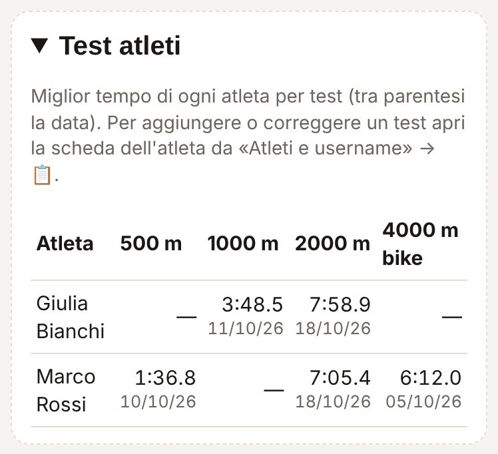
Registro presenze
Scegli un giorno per vedere chi c'era, con gruppo e ora. Sotto c'è il riepilogo progressivo dall'inizio della preparazione: presenze su sedute previste e percentuale. Le sedute previste tengono conto delle 6 o 4 sedute di ciascuno.
Ogni presenza finisce anche come riga nella scheda «Presenze» del foglio Google.
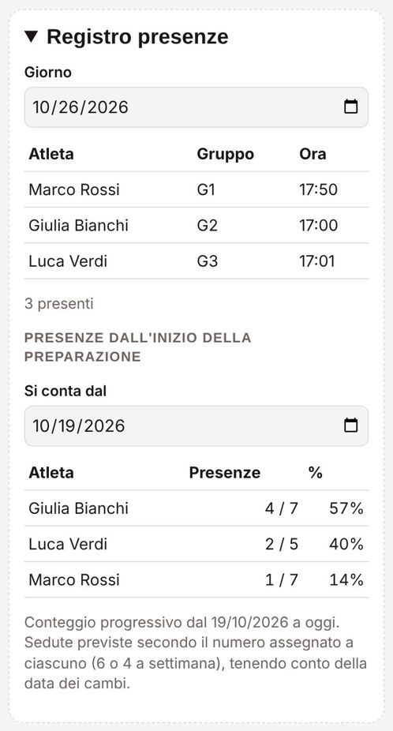
Libreria remo, altri allenamenti, schede PDF
- Apri una sezione di Altri allenamenti e tocca Nuovo allenamento; per modificarlo o eliminarlo, Modifica
- In Schede PDF tocca Carica schede PDF per aggiungerne (anche più insieme). Con ✎ le rinomini, con ✕ le togli (tocca due volte).
- In Libreria · aggiungi esercizio aggiungi esercizi nuovi alla libreria
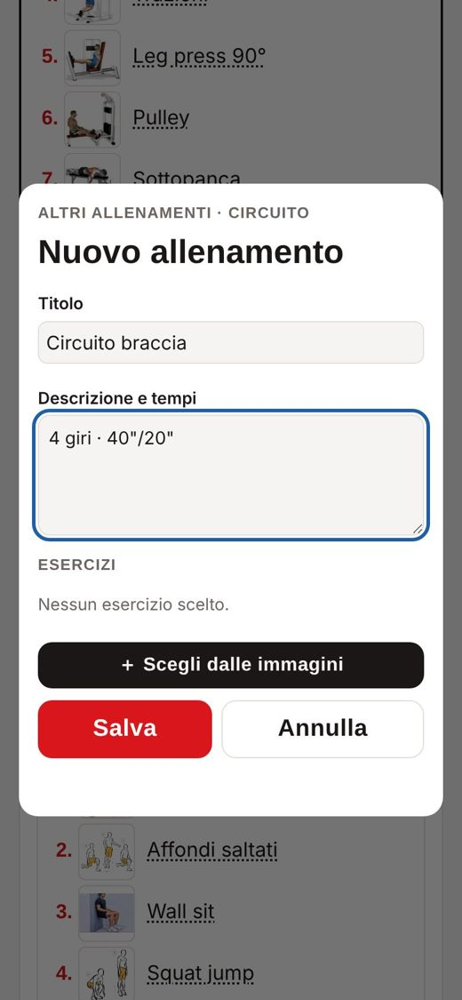
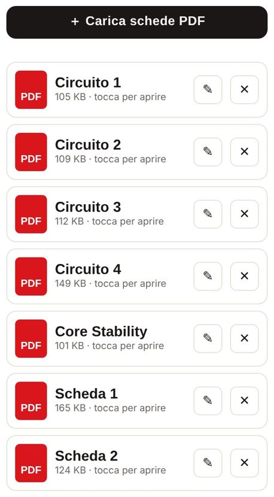